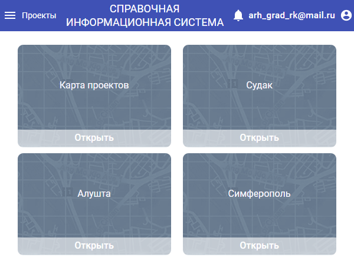

Список всех существующих проектов отображается на странице управления проектами.
Переход на неё осуществляется сразу, после авторизации.
Страница «Управление проектами» позволяет создать, открыть, удалить. Также отображает кол-во слоёв внутри каждого проекта.
